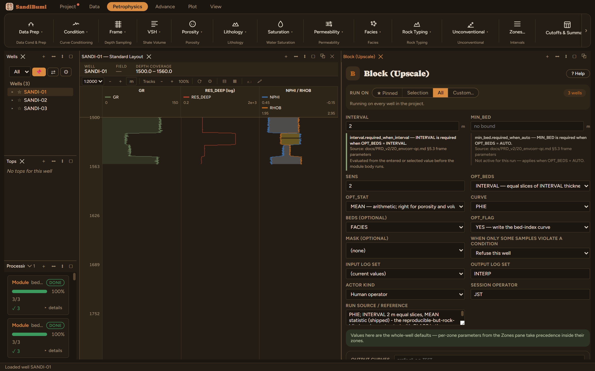
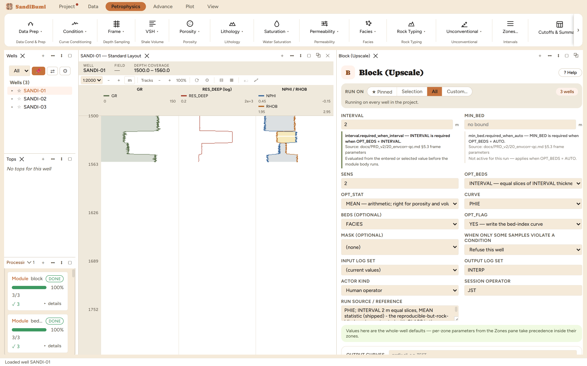

Block replaces a curve with one value per bed, held across the bed, while
keeping the curve on the well's own depth frame so nothing downstream has to
know it was upscaled. Reach for it when a consumer needs bed-scale rather
than sample-scale values: simulation-layer properties, zone-constant inputs,
a cleaner crossplot. Because the values are constant over intervals, set the
blocked curve's draw style to Step in the curve editor, or the log view will
draw a gradient between two block values that the data never measured.
The physics
The decision is entirely in what counts as a bed (OPT_BEDS):
INTERVAL: equal slices of INTERVAL thickness. Reproducible, and
it ignores the rock: a contact falling mid-slice is averaged across.
CLASS: each run of a constant value in a class curve (FACIES, a
rock type, a flag). Boundaries are where the rock changes, which is what
a bed means.
AUTO: segment the curve's own steps, the Bed Detect chapter's
machinery; check the beds there first.
OPT_STAT picks what one value per bed means: MEAN for volumetric
properties, MEDIAN where outliers within a bed should not vote.
The picks and why
Canonical demonstration: PHIE blocked over INTERVAL 2 m
slices, MEAN. Run live: the blocked curve carries 48 distinct
values across the three wells, one per slice.
What changes under CLASS beds on the FACIES curve, run live: the
same porosity collapses to 15 distinct values, one per facies run,
with boundaries where the rock changes instead of every 2 m. Fewer,
bigger, geologically placed blocks: this is the mode the module's own
documentation steers toward once a checked class curve exists.
Step by step
Open Petrophysics ▸ Frame ▸ Block (Upscale).
Pick the curve, choose what a bed is, and set the statistic.
Fill the custody line and press Run Block.
Set the output curve's draw style to Step wherever it is displayed.

What a bed is, and what one value per bed means: the two
decisions the module asks for.
Reading the result
3 clean, two outputs: the blocked curve and the bed index it was
averaged over. Count the blocks in the Database Inspector:
SELECT COUNT(DISTINCT round(value, 6))
FROM computed_curves WHERE curve_name = 'PHIE_BLK' AND NOT isnan(value)

48 interval blocks against 15 facies blocks: same porosity, two
different statements about where rock changes.
QC and pitfalls
Overlay the blocked curve on the original with Step drawing. An
interval boundary cutting through a thick clean sand, splitting one rock
into two half-values, is INTERVAL mode's signature artefact and the
argument for CLASS.
Blocking changes values, never the frame: the output still has a value
at every input depth. Changing the sampling itself (resample, regularize,
align) is Reframe's job, deliberately not a module.
An average over a bed that includes masked or missing samples is an
average of what remains; check coverage per bed before quoting a blocked
value as the bed's property.